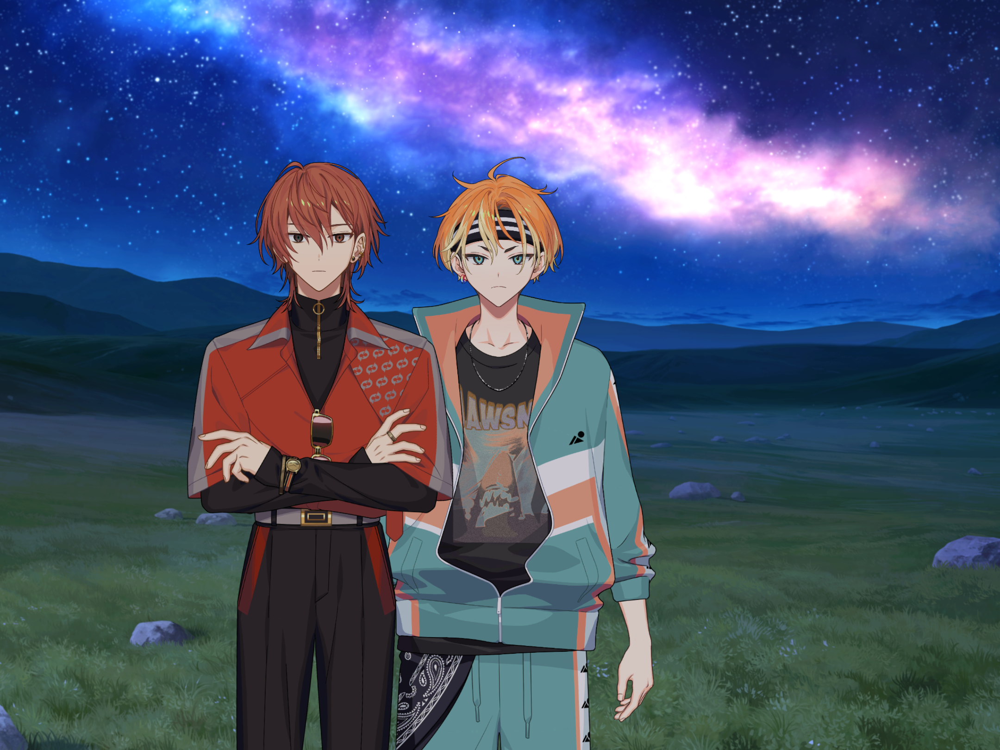
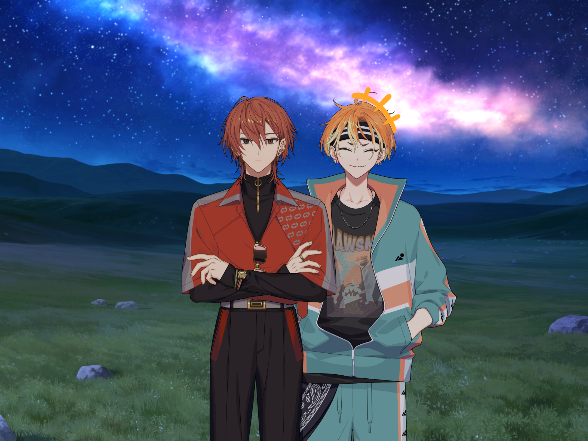
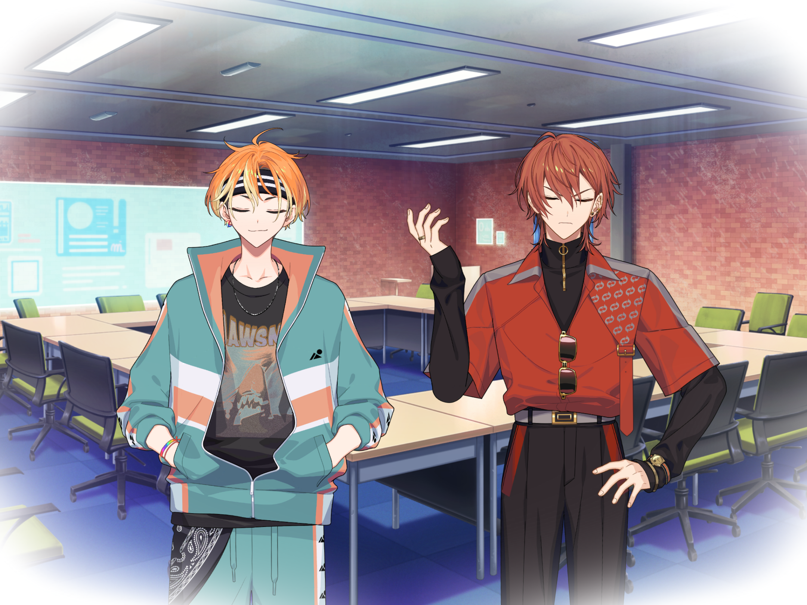
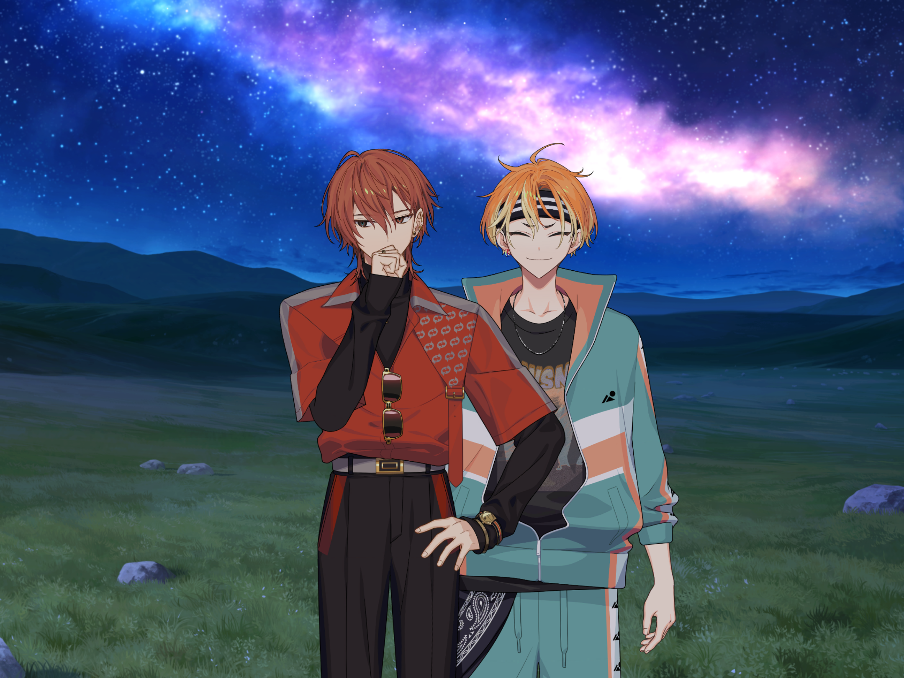
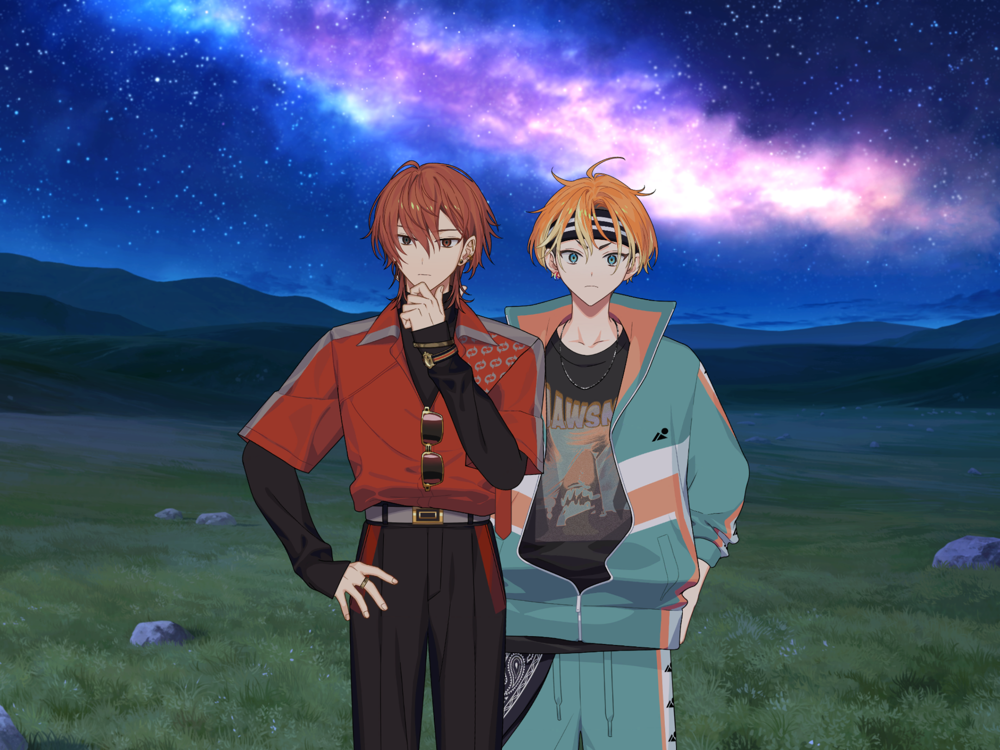
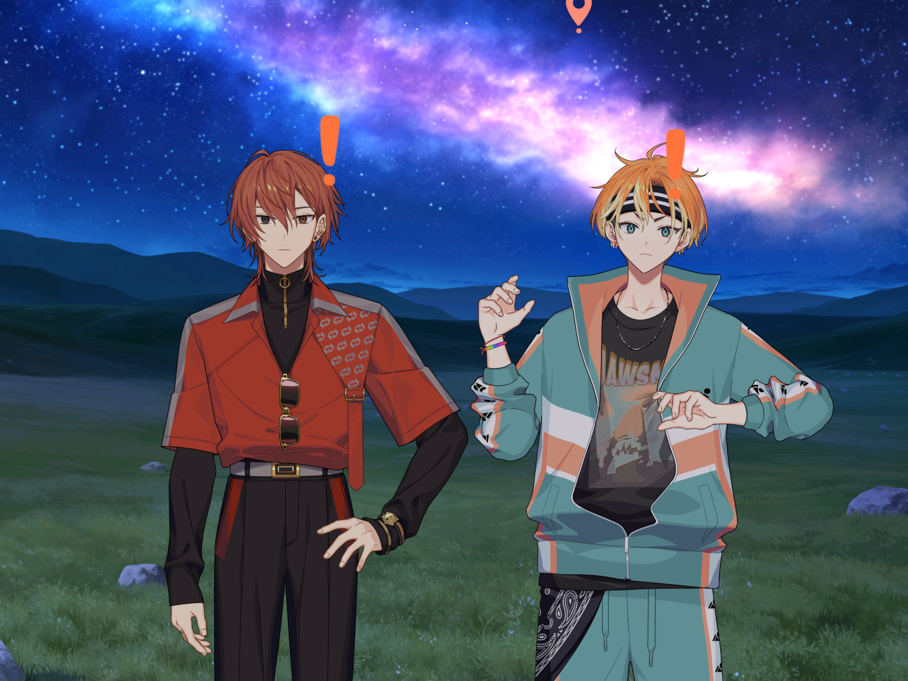

— Монгольські степи —

Ренґа
Г-гей, Акуто. Що таке?

Акута
У такій ситуації тре’ підтримувати тепло, поки температура тіла не впала!
Ренґа
Га?
Акута
Знаєш, у мене схожа ситуація якось була~. Ми з дядьком пішли на кемпінґ і заблукали в горах.. Ну і він мене навчив цьому! Типу спершу треба зберегти тепло... А потім переміститися туди, де вітер не дістане. Але ми в степу, тож під якоюсь брилою не сховаєшся. Поки ми з підвітряного боку – всьо буде добре. О. Ренґо, сюди!
Ренґа
Д-добре...
— Таймскіп —

Ренґа
... Уже не так холодно.
Акута
Скажи~? Але нам треба й далі бути як приєкленими й обіймтися! Ну, в мене є запальничка, але це як зовсім лихо буде. Не хочу спалити все тут, значить слід бути обережним. І… зорі ще на небі, тож базове розуміння сторін у нас є. Та вночі небезпечно пересуватися – почекаємо сходу сонця.
Ренґа
(... То він правду говорив?)
— Початок спогаду —

Акута
Ренґо, в тебе був занадто серйозний вираз. Розчілься. Поки в небі сяють зорі – все буде в нас окей!
— Кінець спогаду —
— Монгольські степи —

Ренґа
(Я подумав, що він жартував, коли сказав: “Поки в небі сяють зорі – все буде в нас окей”...)
Акута
“Ми лише удвох всю ніч. Зорі воістину прекрасні нині, любий~”. Жартую. Така сцена була у фільмі, який я нещодавно дивився~.
Ренґа
Н-не дуркуй! Ми не у фільмі. (Але Акута справді дивовижний. Навіть у такій ситуації може жартувати. Виглядає так, ніби йому весело, хоча ми в такій скрутній ситуації. Дідько... Треба теж зібратися!)
Акута
ГАПЧИХ!!!
Ренґа
Гей, все гаразд? … Температура знову падає.
Акута
Ууу~ Мушу визнати, спати надворі тяжкувато~. Все тіло тремтить, тож НАПАДАЙ, РЕНҐО! Тримай мене так, ніби ми в монгольському сумо!
Ренґа
(Може, нам слід йти назад, поки не замерзли? Хоча ні, Акута сказав, що уночі небезпечно пересуватися— Але якщо так і лишимося, то втратимо всі сили. Що ж робити...)
Звук тупоту у віддалі

Ренґа
Гм? Це коня чути?
Акута
Ренґо! Диви-но! ГЕЕЕЙ, СЮДИ!
Вершник
?...
Акута
Людина~! Хелп! Хелп мііііі! Ми загубились! Зис іс іноземець~!*
Вершник
(Монгольською) Що ці хлопці тут забули? Вже ніч.
Акута
... Так і думав, що він нас не розуміє.
Ренґа
Залиш це на мене, Акуто. Я точно верну тебе додому.
Акута
Ренґо?
Ренґа
О-орой, менд. Бід япон, чууд. Намайґ, Ренґа, Нішідзоно, ґедеґ. (Д-добрий вечір. Я японець. Мене звати Ренґа Нішідзоно.)
Акута
Ренґо, ти знаєш монгольську?
Ренґа
Л-лиш трохи вивчив те, що могло знадобитися. Навіть якщо ламано, якщо вкладу почуття — слова досягнуть людини. Я особисто це знаю. А ще, коли вивчиш мову іншого, то зможеш стати з ним ліпшими друзями, так? Тому й постарався вивчити.
Акута
...
Ренґа
Ми загубились! Ой, стоп, як сказати “загубились”... угх... згадуй... ти зможеш, Ренґо!... ... Точно! О-о... сох! Хоцрох, туслаач! (Загубились, допоможіть!)
Вершник
(Монгольською) Що? Ви загубились?
Ренґа
(Його вираз змінився!...) Так! Ем, “так” буде... тіймее. Тіймее! (... так. Так!)
Акута
... Слова Ренґи... доходять до нього... О-... Оце да! Окей, теж спробую! Турусун, тусурарай! Тосурарай!** Я хочу додому!
Ренґа
(Я багато вчився за відео від шефа. Хоча моя монгольська погана, вимова має бути правильна. Але через те, що ми так сильно кричимо, факт, що ми в халепі... Прошу! Нехай він зрозуміє!)
Вершник
(Монгольською) Он як. Це ви ті люди з Японії—
Ренґа й Акута
!...
